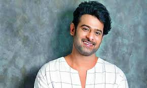

|

PrabhasUppalapati Venkata Suryanarayana Prabhas Raju ([pɾabʱaːs] born 23 October 1979), known mononymously as Prabhas, is an Indian actor who works predominantly in Telugu cinema.[4] Referred to in the media as the "Rebel Star", he is one of the highest-paid actors in Indian cinema.[5] Prabhas has been featuring in Forbes India's Celebrity 100 list since 2015[6][7][8] and has received seven Filmfare Awards nominations, a Nandi Award, and a SIIMA Award. |
|
| Father Name | Uppalapati Surya Narayana Raju |
|---|---|
| Mother Name | Siva Kumari |
| Born on | Uppalapati Venkata Suryanarayana Prabhas Raju[1][2] 23 October 1979 (age 44)[3] Madras, Tamil Nadu, India |
| Education | Btech |
| Awards | Full List |
| Occupation | Actor |
| Relatives | Krishnam Raju |